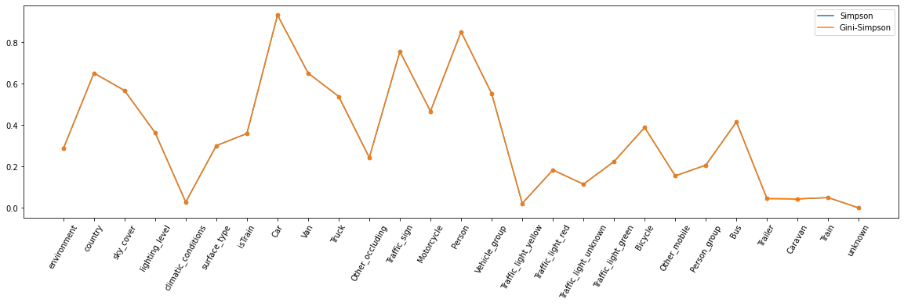

Texte expliquant comment ça fonctionne et de ce dont on a besoin
[1]:
import numpy as np
import pandas as pd
from matplotlib import pyplot as plt
import seaborn as sns
from scipy import stats
from dqm import diversity
Data Preprocessing
[2]:
data = pd.read_csv("../../vdp_image_train_and_test_v2.csv",sep=";")
[3]:
data.head()
[3]:
| image | camera | sequence | environment | country | sky_cover | surface_condition | timestamp | lighting_level | climatic_conditions | ... | Traffic_light_unknown | Traffic_light_green | Bicycle | Other_mobile | Person_group | Bus | Trailer | Caravan | Train | unknown | |
|---|---|---|---|---|---|---|---|---|---|---|---|---|---|---|---|---|---|---|---|---|---|
| 0 | 20170320_144339_cam_0_00011702.jpg | FV | 20170320_144339 | Urban | FR | Cloudy | dry | 0 | Daylight/Bright | Dry | ... | 0 | 0 | 0 | 0 | 0 | 0 | 0 | 0 | 0 | 0 |
| 1 | 20170320_144339_cam_0_00011708.jpg | FV | 20170320_144339 | Urban | FR | Cloudy | dry | 1 | Daylight/Bright | Dry | ... | 0 | 0 | 0 | 0 | 0 | 0 | 0 | 0 | 0 | 0 |
| 2 | 20170320_144339_cam_0_00011714.jpg | FV | 20170320_144339 | Urban | FR | Cloudy | dry | 2 | Daylight/Bright | Dry | ... | 0 | 0 | 0 | 0 | 0 | 0 | 0 | 0 | 0 | 0 |
| 3 | 20170320_144339_cam_0_00011720.jpg | FV | 20170320_144339 | Urban | FR | Cloudy | dry | 3 | Daylight/Bright | Dry | ... | 0 | 0 | 0 | 0 | 0 | 0 | 0 | 0 | 0 | 0 |
| 4 | 20170320_144339_cam_0_00011726.jpg | FV | 20170320_144339 | Urban | FR | Cloudy | dry | 4 | Daylight/Bright | Dry | ... | 0 | 0 | 0 | 0 | 0 | 0 | 0 | 0 | 0 | 0 |
5 rows × 32 columns
[4]:
print(data.shape)
(124020, 32)
[5]:
data.columns
[5]:
Index(['image', 'camera', 'sequence', 'environment', 'country', 'sky_cover',
'surface_condition', 'timestamp', 'lighting_level',
'climatic_conditions', 'surface_type', 'isTrain', 'Car', 'Van', 'Truck',
'Other_occluding', 'Traffic_sign', 'Motorcycle', 'Person',
'Vehicle_group', 'Traffic_light_yellow', 'Traffic_light_red',
'Traffic_light_unknown', 'Traffic_light_green', 'Bicycle',
'Other_mobile', 'Person_group', 'Bus', 'Trailer', 'Caravan', 'Train',
'unknown'],
dtype='object')
[6]:
data.dtypes
[6]:
image object
camera object
sequence object
environment object
country object
sky_cover object
surface_condition object
timestamp int64
lighting_level object
climatic_conditions object
surface_type object
isTrain bool
Car int64
Van int64
Truck int64
Other_occluding int64
Traffic_sign int64
Motorcycle int64
Person int64
Vehicle_group int64
Traffic_light_yellow int64
Traffic_light_red int64
Traffic_light_unknown int64
Traffic_light_green int64
Bicycle int64
Other_mobile int64
Person_group int64
Bus int64
Trailer int64
Caravan int64
Train int64
unknown int64
dtype: object
[7]:
data.isna().sum()
[7]:
image 0
camera 0
sequence 0
environment 0
country 0
sky_cover 0
surface_condition 0
timestamp 0
lighting_level 0
climatic_conditions 0
surface_type 0
isTrain 0
Car 0
Van 0
Truck 0
Other_occluding 0
Traffic_sign 0
Motorcycle 0
Person 0
Vehicle_group 0
Traffic_light_yellow 0
Traffic_light_red 0
Traffic_light_unknown 0
Traffic_light_green 0
Bicycle 0
Other_mobile 0
Person_group 0
Bus 0
Trailer 0
Caravan 0
Train 0
unknown 0
dtype: int64
[8]:
data.describe().T
[8]:
| count | mean | std | min | 25% | 50% | 75% | max | |
|---|---|---|---|---|---|---|---|---|
| timestamp | 124020.0 | 166.508200 | 149.113025 | 0.0 | 62.0 | 124.0 | 234.0 | 899.0 |
| Car | 124020.0 | 7.122787 | 4.614932 | 0.0 | 4.0 | 6.0 | 10.0 | 41.0 |
| Van | 124020.0 | 0.880140 | 1.171204 | 0.0 | 0.0 | 0.0 | 1.0 | 9.0 |
| Truck | 124020.0 | 0.636373 | 1.121335 | 0.0 | 0.0 | 0.0 | 1.0 | 10.0 |
| Other_occluding | 124020.0 | 0.385591 | 1.355415 | 0.0 | 0.0 | 0.0 | 0.0 | 23.0 |
| Traffic_sign | 124020.0 | 1.942130 | 2.882223 | 0.0 | 0.0 | 1.0 | 3.0 | 37.0 |
| Motorcycle | 124020.0 | 0.609611 | 1.432627 | 0.0 | 0.0 | 0.0 | 1.0 | 19.0 |
| Person | 124020.0 | 4.113006 | 5.809231 | 0.0 | 0.0 | 2.0 | 6.0 | 62.0 |
| Vehicle_group | 124020.0 | 0.655685 | 1.096322 | 0.0 | 0.0 | 0.0 | 1.0 | 14.0 |
| Traffic_light_yellow | 124020.0 | 0.014562 | 0.151159 | 0.0 | 0.0 | 0.0 | 0.0 | 4.0 |
| Traffic_light_red | 124020.0 | 0.138413 | 0.466610 | 0.0 | 0.0 | 0.0 | 0.0 | 7.0 |
| Traffic_light_unknown | 124020.0 | 0.083535 | 0.377576 | 0.0 | 0.0 | 0.0 | 0.0 | 7.0 |
| Traffic_light_green | 124020.0 | 0.182664 | 0.542280 | 0.0 | 0.0 | 0.0 | 0.0 | 5.0 |
| Bicycle | 124020.0 | 0.452371 | 1.177584 | 0.0 | 0.0 | 0.0 | 0.0 | 24.0 |
| Other_mobile | 124020.0 | 0.219239 | 1.009973 | 0.0 | 0.0 | 0.0 | 0.0 | 30.0 |
| Person_group | 124020.0 | 0.199202 | 0.727278 | 0.0 | 0.0 | 0.0 | 0.0 | 17.0 |
| Bus | 124020.0 | 0.407370 | 0.885255 | 0.0 | 0.0 | 0.0 | 1.0 | 10.0 |
| Trailer | 124020.0 | 0.024335 | 0.162542 | 0.0 | 0.0 | 0.0 | 0.0 | 3.0 |
| Caravan | 124020.0 | 0.026181 | 0.190231 | 0.0 | 0.0 | 0.0 | 0.0 | 6.0 |
| Train | 124020.0 | 0.032301 | 0.268226 | 0.0 | 0.0 | 0.0 | 0.0 | 19.0 |
| unknown | 124020.0 | 0.000008 | 0.002840 | 0.0 | 0.0 | 0.0 | 0.0 | 1.0 |
[9]:
df = data.drop(['image','camera','sequence','timestamp','surface_condition'],axis=1)
[10]:
df.head()
[10]:
| environment | country | sky_cover | lighting_level | climatic_conditions | surface_type | isTrain | Car | Van | Truck | ... | Traffic_light_unknown | Traffic_light_green | Bicycle | Other_mobile | Person_group | Bus | Trailer | Caravan | Train | unknown | |
|---|---|---|---|---|---|---|---|---|---|---|---|---|---|---|---|---|---|---|---|---|---|
| 0 | Urban | FR | Cloudy | Daylight/Bright | Dry | Asphalt | True | 11 | 1 | 0 | ... | 0 | 0 | 0 | 0 | 0 | 0 | 0 | 0 | 0 | 0 |
| 1 | Urban | FR | Cloudy | Daylight/Bright | Dry | Asphalt | True | 10 | 1 | 0 | ... | 0 | 0 | 0 | 0 | 0 | 0 | 0 | 0 | 0 | 0 |
| 2 | Urban | FR | Cloudy | Daylight/Bright | Dry | Asphalt | True | 10 | 1 | 0 | ... | 0 | 0 | 0 | 0 | 0 | 0 | 0 | 0 | 0 | 0 |
| 3 | Urban | FR | Cloudy | Daylight/Bright | Dry | Asphalt | True | 9 | 1 | 0 | ... | 0 | 0 | 0 | 0 | 0 | 0 | 0 | 0 | 0 | 0 |
| 4 | Urban | FR | Cloudy | Daylight/Bright | Dry | Asphalt | True | 8 | 1 | 0 | ... | 0 | 0 | 0 | 0 | 0 | 0 | 0 | 0 | 0 | 0 |
5 rows × 27 columns
Diversité
Simpson index
[11]:
res = pd.DataFrame(columns=['Variables','Simpson','Gini'])
res
[11]:
| Variables | Simpson | Gini |
|---|
[12]:
for i in df:
s = simpson(df[i])
g = gini(df[i])
r = pd.DataFrame([[i,s,g]],columns=['Variables','Simpson','Gini'])
res = pd.concat([res,r])
[13]:
res
[13]:
| Variables | Simpson | Gini | |
|---|---|---|---|
| 0 | environment | 0.286694 | 0.286692 |
| 0 | country | 0.651782 | 0.651777 |
| 0 | sky_cover | 0.567566 | 0.567561 |
| 0 | lighting_level | 0.363462 | 0.363459 |
| 0 | climatic_conditions | 0.028321 | 0.028320 |
| 0 | surface_type | 0.301047 | 0.301045 |
| 0 | isTrain | 0.359761 | 0.359758 |
| 0 | Car | 0.932339 | 0.932331 |
| 0 | Van | 0.651716 | 0.651711 |
| 0 | Truck | 0.538864 | 0.538860 |
| 0 | Other_occluding | 0.243207 | 0.243205 |
| 0 | Traffic_sign | 0.756128 | 0.756122 |
| 0 | Motorcycle | 0.467221 | 0.467217 |
| 0 | Person | 0.851241 | 0.851234 |
| 0 | Vehicle_group | 0.552858 | 0.552854 |
| 0 | Traffic_light_yellow | 0.022071 | 0.022071 |
| 0 | Traffic_light_red | 0.183493 | 0.183491 |
| 0 | Traffic_light_unknown | 0.114764 | 0.114763 |
| 0 | Traffic_light_green | 0.224319 | 0.224317 |
| 0 | Bicycle | 0.388734 | 0.388731 |
| 0 | Other_mobile | 0.155205 | 0.155204 |
| 0 | Person_group | 0.206770 | 0.206768 |
| 0 | Bus | 0.415832 | 0.415829 |
| 0 | Trailer | 0.045067 | 0.045067 |
| 0 | Caravan | 0.043525 | 0.043525 |
| 0 | Train | 0.049888 | 0.049888 |
| 0 | unknown | 0.000016 | 0.000016 |
[14]:
plt.figure(figsize=(20,5))
plt.plot(res['Variables'],res['Simpson'],label='Simpson')
plt.scatter(res['Variables'],res['Simpson'],s=20)
plt.plot(res['Variables'],res['Gini'],label='Gini-Simpson')
plt.scatter(res['Variables'],res['Gini'],s=20)
plt.xticks(rotation=60)
plt.legend()
# Simpson 0 diversité maximale
[14]:
<matplotlib.legend.Legend at 0x7fbfca22aca0>

[15]:
p = df.value_counts()/sum(df.value_counts())
d = pd.DataFrame(p)
dictVal = {}
for ligne in list(d.index):
for i in range(len(df.columns)):
if df.columns[i] not in dictVal:
dictVal[df.columns[i]] = []
dictVal[df.columns[i]].append(ligne[i])
pd.DataFrame({**dictVal, "p" : list(p)})
[15]:
| environment | country | sky_cover | lighting_level | climatic_conditions | surface_type | isTrain | Car | Van | Truck | ... | Traffic_light_green | Bicycle | Other_mobile | Person_group | Bus | Trailer | Caravan | Train | unknown | p | |
|---|---|---|---|---|---|---|---|---|---|---|---|---|---|---|---|---|---|---|---|---|---|
| 0 | Urban | US | Clear | Daylight/Bright | Dry | Asphalt | True | 10 | 0 | 0 | ... | 0 | 0 | 0 | 0 | 2 | 0 | 0 | 0 | 0 | 0.001266 |
| 1 | Highway | FR | Cloudy | Daylight/Bright | Dry | Asphalt | True | 2 | 1 | 2 | ... | 0 | 0 | 0 | 0 | 0 | 0 | 0 | 0 | 0 | 0.000903 |
| 2 | Urban | FR | Clear | Dawn/Dusk/Low_light | Dry | Cobbled/Paving | False | 4 | 2 | 0 | ... | 0 | 0 | 0 | 0 | 0 | 0 | 0 | 0 | 0 | 0.000839 |
| 3 | Rural | DE2 | Cloudy | Daylight/Bright | Dry | Asphalt | True | 1 | 3 | 3 | ... | 0 | 0 | 0 | 0 | 0 | 0 | 0 | 0 | 0 | 0.000645 |
| 4 | Highway | FR | Cloudy | Daylight/Bright | Dry | Asphalt | True | 3 | 1 | 2 | ... | 0 | 0 | 0 | 0 | 0 | 0 | 0 | 0 | 0 | 0.000645 |
| ... | ... | ... | ... | ... | ... | ... | ... | ... | ... | ... | ... | ... | ... | ... | ... | ... | ... | ... | ... | ... | ... |
| 75808 | Urban | FR | Cloudy | Daylight/Bright | Dry | Asphalt | True | 5 | 0 | 0 | ... | 4 | 0 | 0 | 0 | 0 | 0 | 0 | 0 | 0 | 0.000008 |
| 75809 | Urban | FR | Cloudy | Daylight/Bright | Dry | Asphalt | True | 5 | 0 | 0 | ... | 4 | 0 | 0 | 0 | 0 | 0 | 0 | 0 | 0 | 0.000008 |
| 75810 | Urban | FR | Cloudy | Daylight/Bright | Dry | Asphalt | True | 5 | 0 | 0 | ... | 2 | 0 | 0 | 0 | 0 | 0 | 0 | 0 | 0 | 0.000008 |
| 75811 | Urban | FR | Cloudy | Daylight/Bright | Dry | Asphalt | True | 5 | 0 | 0 | ... | 2 | 1 | 0 | 0 | 0 | 0 | 0 | 0 | 0 | 0.000008 |
| 75812 | Urban | US | Overcast | Daylight/Bright | Dry | Asphalt | False | 9 | 1 | 0 | ... | 0 | 0 | 0 | 0 | 1 | 0 | 0 | 0 | 0 | 0.000008 |
75813 rows × 28 columns
[16]:
for i in p:
a=i**2
b=np.sum([a])
print(b)
6.501544597956315e-11